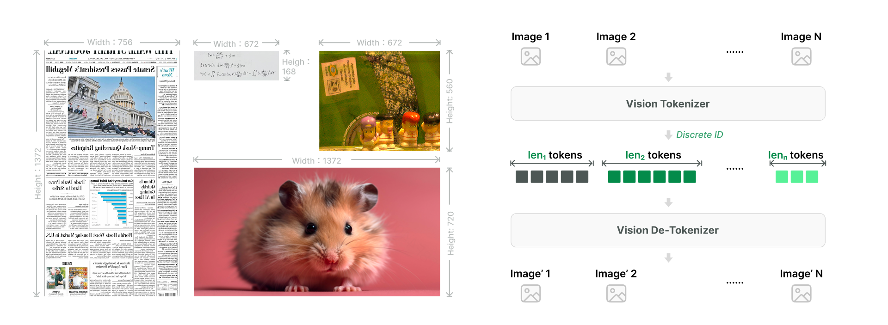
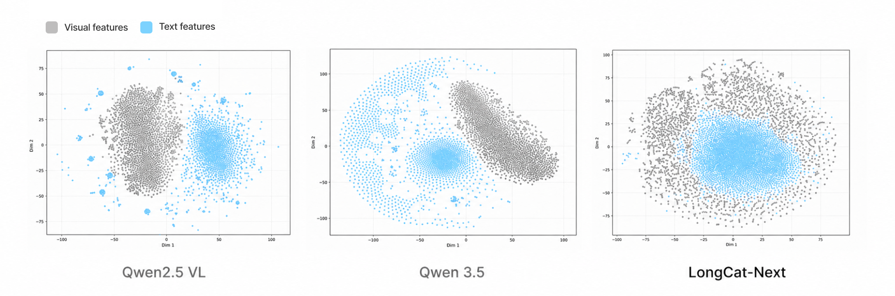
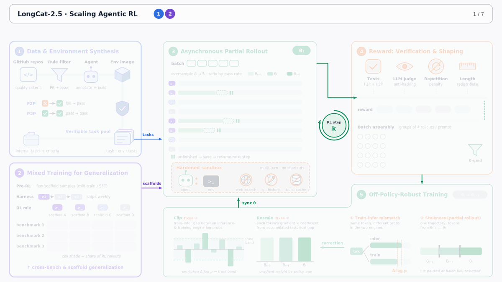
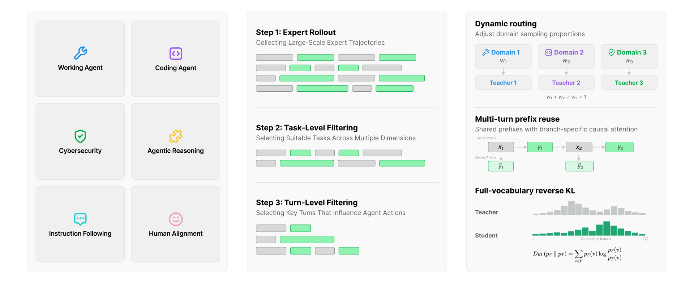
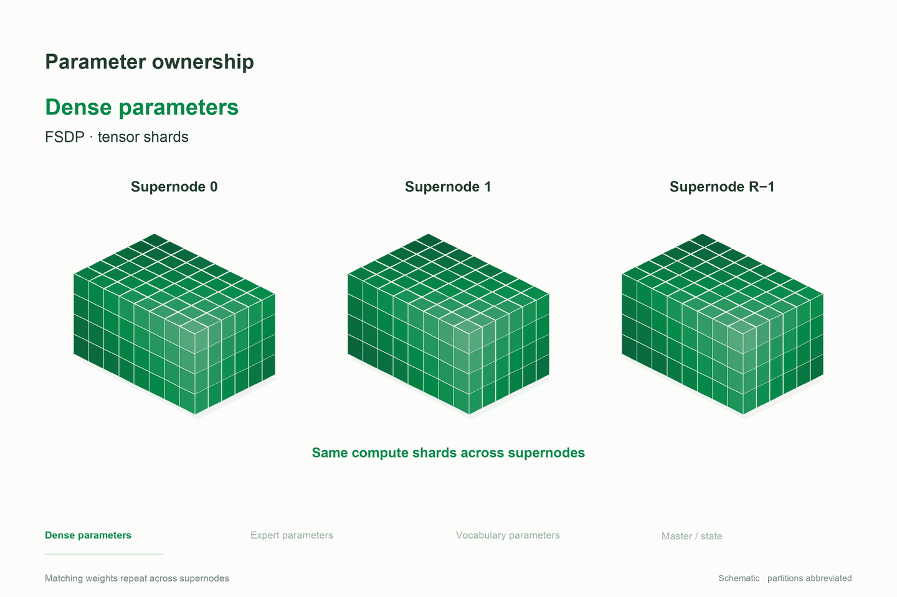
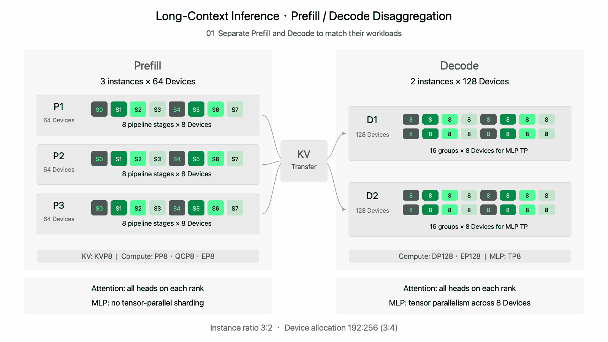

LongCat-2.5：原生视觉、长程Agent训练与国产算力工程
发布、家族与证据地图
| 来源 | 能确认什么 | 不能据此推出什么 |
|---|---|---|
| S1 API ChangeLog | 9/25 Preview、11/2正式API阶段 | 技术博客发布日期、权重首开日 |
| S2官方Tech Blog | 显示2026-11-1；架构/训练/infra/量化/评测 | 页面显示日期与API上线时刻完全一致 |
| S3 HF Card | MIT权重卡、完整结果及协议 | 仓库建立时即公开权重 |
| S4 W4A4 Card | 同族4bit部署与实现收益 | 独立新正代；所有任务无损 |
11月10日IAB中博客GitHub/HF按钮仍写“敬请期待”，但HF卡已存在，是页面同步状态差异，不据此否定权重卡，也不猜首开日期。原始SPA HTML、官方JS与原图已归档；博客需运行页面后读取，不能将静态壳误判为没有技术资料。

历史服务接口（11月3日归档，非本次价格核验）：上下文1,048,576 tokens，含输入输出；最大输出262,144；图像每请求100张；视频最多10文件、单个不足1小时；人民币每百万输入/缓存/输出2 / 0.04 / 8。它们是当时托管服务文档，不自动等于本地checkpoint硬限制或今天仍有效的价格。兼容SDK和scaffold也不等于相同harness下性能已复现。
视觉表示、Agent RL与在线教学
原生视觉：离散化不是外接一个图片描述器
LongCat-2.5为1.6T MoE、每token约48B激活，延续2.0并强化视觉与长程工程任务。语义对齐编码器 Semantic-and-Aligned Encoder（SAE）产生原生分辨率特征，经RVQ多层残差码本离散化；这里SAE不是稀疏自编码器。多层级token减轻单层码本的信息瓶颈，视觉码本embedding与主干联合学习。

固定tokenizer允许离线缓存视觉token ID，训练图不必在线跑视觉编码器，视觉序列长度可在packing前已知，改善各DP rank模态比例与负载均衡。这是数据/infra协同设计，不是“视觉信息免费”。

图2右图来自约3B激活的小规模MoE验证，不是48B激活生产模型的直接对齐证明。t-SNE交织只是投影观察；语义融合强度、分辨率泛化与文字保真仍要靠配对任务和消融验证。
可验证数据闭环
从公开GitHub PR、关联issue和内部代码场景开始：自动打标签、构建交互环境、生成F2P与P2P测试；真实rollout通过率再反向修正标签和难度筛选。分析假阴性/假阳性后继续修补F2P测试。关键不是只多收失败轨迹，而是确认测试能区分真修复、无关改动、脆弱投机以及测试本身错误。

异步partial rollout与陈旧性
每step适量超采样，凑批后中断未结束轨迹并存储，下一轮续跑；超采样量随任务通过率调整，全对/全错零梯度组被过滤。同一长轨迹token可能来自多个历史checkpoint，因此作者裁剪采样与当前logprob差异，并用累计历史差异调整token梯度贡献。博客没有足够公式与阈值，不强行命名为某个现成importance estimator，也不猜具体off-policy权重。
反作弊环境断网、清理git历史和缓存，另有LLM judge审轨迹；重复思考、重复工具调用受惩罚，正样本奖励重分配抑制过度思考与长度增长。这些是训练环境约束的厂商描述，不是对当前用户工作目录进行清理的指令。冷启动用少量scaffold适配样例，之后跨任务、跨scaffold混合RL；泛化收益仍缺完整消融。
MOPD：学生轨迹上的专家分布
Agent、推理、交互领域专家分别优化，学生在各领域在线采样，使用全词表KL接受专家教学。教师见过的轨迹提供prefix，原先按turn拆，现在单轮长回复也切成固定长度的per-cut prefix，限制学生自采样最长长度，减少长回复内部的分布漂移。

同一教师轨迹的prefix送同一推理引擎共享prefill/KV；训练把教师作为树干、学生续写作为分支，Tree Attention一次前反传完成同组样本，避免重复计算。这里应分别验证教学质量、学生自由探索损失、同等token预算的学习效率，而不是把缓存复用当作模型能力增益。
长序列系统、量化与评测判断
国产加速器：通信拓扑与显存一起设计
单卡不足80GB时，FSDP与EP度数对齐超节点卡数，CP不超过该数，使参数AG、专家token A2A与KV AG尽量位于高带宽域内。基础embedding、LM head、N-gram embedding在DP+CP联合域做混合词表并行；MoonEP达到不均衡阈值才复制专家，防止复制通信成本反超收益及路由OOM。
双重分片FSDP将模型参数留在超节点内分片，FP32主权重/优化器状态借HSDP跨副本分片；连续扁平buffer支持非均匀分片和Muon，写入权重梯度/复用临时区降低峰值。零拷贝AG/RS、AIV专家通信、参数预取和ScMoE重叠，配合CPU绑核与NUMA调度。长序列SFT测试中单卡吞吐较DDP提升86%，不等于所有预训练、推理均快86%。

数值一致性与长尾rollout
作者对齐训练、Prefill和Decode逐token logprob的bitwise结果，采用batch-invariant算子并补backward。TP以完整K维GEMM替代分片结果归约：训练/Prefill用权重AG与输入A2A；Decode把o_proj/fc2改column-parallel，以输入AG→完整K GEMM→输出A2A避免权重反复聚合。DCP则在训练/Prefill复现Decode的KV切块与固定累加顺序。目的在于不让并行配置造成的数值差被误当作策略更新或陈旧性。
PD分离后，QCP/KVP避免MLA的TP冗余；HiCache释放没有读引用的主存重复副本，Mooncake重构权重管理与Actor offload。LSA奇数层复用偶数层top-k索引，可提前从主存加载所需奇数层KV，所测场景保持TPOT、decode KV容量接近翻倍。Router按L1+L2容量和请求总token控制准入，优先完成度高的Group，防止前缀互相淘汰引发重算雪崩。P:D=3:2仅是该负载最优。

W4A4：区分位宽与缓存两项变化
专家权重和激活同时INT4，以FlatQuant可学习等价变换控制精度；共享输入变换在token复制/dispatch前完成，INT4表示贯穿专家通信与计算，融合变换、scale、量化、packing。相对W8A8线上压测，prefill吞吐+43.3%、decode+42.77%、TTFT−15.91%、TPOT−19.72%，GMM平均1.73倍。卡片另报 W4A4KV8比W8A8KV16 decode+92%，这个对照还改变KV位宽，不能称纯W4A4的92%收益。“已评测任务保持相当”也不等于全任务量化无损。
完整官方结果
| Benchmark | LongCat-2.5 | LongCat-2.0 | GPT-5.5 | GPT-5.6-Sol | Claude-Opus-4.8 | Claude-Opus-5 | GLM-5.3 | kimi-k3 | DeepSeek-V4.1-Flash |
|---|---|---|---|---|---|---|---|---|---|
| Terminal Bench v2.1 | 88.4 | 70.8 | 83.2* | 88.8* | 74.6* | 89.1* | 88.2* | 88.3* | 90.6* |
| Terminal Bench v4.0 | 38.5 | 3.0 | - | 37.3* | 23.6* | 53.9* | 41.8* | 12.6* | 31.2* |
| Program Bench (Almost Resolved) | 25.5 | 2.5 | 13.5* | 23.0* | 16.5* | 37.0* | 19.0* | 17.5* | 20.3* |
| DeepSWE (v1.1) | 64.6 | 9.7 | 67.0* | 72.7* | 59.0* | 68.8* | 66.9* | 67.5* | 74.2* |
| PaperBench | 82.1 | 45.2 | 80.0 | 83.3 | 72.9 | 79.1 | 73.7 | 77.5 | - |
| SWE Atlas - Codebase QnA | 58.3 | 33.1 | 45.4* | 46.0* | 57.3* | 63.2* | 58.3 | 54.3 | 55.2 |
| SWE Atlas - Refactoring | 55.2 | 35.7 | 44.8 | - | 46.7 | 51.9 | - | 49.5 | 56.7 |
| SWE Atlas - Test Writing | 47.8 | 28.0 | 42.6 | 45.9 | 49.6 | 62.2 | 42.2 | 42.2 | 48.9 |
| NL2Repo | 60.5 | 40.9 | - | 56.8* | 69.7* | 75.3* | 58.0* | 58.0* | 65.4* |
| LongCat AppDev (Internal) | 73.7 | 47.7 | - | 68.8 | - | 76.4 | 73.5 | 75.1 | - |
| BrowseComp | 91.9 | 79.9 | 84.4* | 90.4* | 84.3* | 90.8* | 81.0 | 91.2* | 91.5 |
| AutomationBench (v1.0.6) | 51.8 | 15.8 | 39.7 | 45.8* | 41.0* | 50.3* | 48.2* | 46.7* | 54.8* |
| HLE (w/ tools) | 63.1 | 37.5 | 52.2 | 58.0* | 57.9* | 64.7* | 62.5* | 56.0* | 63.9* |
| ALE (v1.1) | 38.5 | - | - | 30.3* | - | - | 26.2* | 35.2* | - |
| ResearchRubrics | 81.0 | 71.9 | - | 74.2 | - | 72.9 | 79.9 | 78.8 | 80.9 |
| MCP Atlas | 83.1 | 61.8 | 75.3* | 81.8* | 82.2* | 85.8* | 84.2* | 84.2* | 84.4 |
| JobBench | 65.4 | 44.4 | 38.3* | 45.4* | 48.4* | 66.7* | 61.4* | 52.9* | 63.2 |
| SkillsBench | 63.3 | 36.8 | 62.6* | 54.1* | 59.2* | 60.4* | 52.9 | - | 69.8* |
| GDPVal-AA rubrics | 84.8 | 72.9 | - | - | - | 87.7 | 87.7 | 86.6 | 86.8 |
| FrontierScience | 77.0 | 66.0 | - | - | - | 78.0 | 75.0 | 70.0 | 73.0 |
| SpreadsheetBench 2 | 34.9 | 24.1 | 30.2 | 33.3 | - | 33.0 | 35.8 | 34.8* | 33.0 |
| FinSearchComp (T3) | 63.4 | 42.4 | 62.2 | 62.2 | - | 64.0 | 62.2 | 64.0 | 64.3 |
| Claw-Eval (Pass^3) | 78.3 | 67.1 | - | 79.5 | 82.0 | 80.8 | 73.9 | 73.9 | - |
| LongCatClawBench (FORTE) | 83.3 | 72.2 | 80.7 | 80.6 | 80.6 | 82.6 | 85.6 | 86.3 | 73.5 |
| 3DCodeBench (Text→3D) | 55.4 | - | 51.9 | 52.3 | 52.7 | 54.3 | 53.4 | 49.3 | 53.3 |
| Vision2Web | 78.6 | - | 74.6 | 73.5* | 76.1* | 80.2* | 77.8* | 79.0* | 79.2 |
| CharXiv-RQ (w/ tools) | 90.2 | - | 89.0* | 89.1* | 89.9* | 89.3* | - | 91.3* | 87.7 |
| MathVision (w/ tools) | 96.5 | - | 96.8* | 97.8* | 97.1* | - | - | 97.8* | 97.4 |
| VideoMME | 85.2 | - | - | 89.5* | 86.0* | - | - | 90.0* | - |
| PosterBench | 77.4 | - | - | - | 82.3 | - | 82.4 | 76.8 | 75.3 |
| LongCatClawBench-MM (FORTE-MM) | 72.1 | - | 63.5 | 73.2 | 69.9 | 73.1 | 69.0 | 70.7 | 72.8 |
共31个benchmark行；*来自其他厂商公开技术报告/博客/榜单，无星号为美团自测，混合来源只供参考。默认thinking on、temperature1、top_p0.95；不能把所有列说成同一harness现场复测。
| 项目 | 关键协议 |
|---|---|
| TB2.1 /4、Program、NL2Repo | Claude Code2.1.280，512K；TB2.1为3次均值 |
| DeepSWE1.1 | mini-swe-agent，1M，temp1/top_p.95，3次均值 |
| SWE Atlas QnA/Test | CC2.1.116；Opus4.5 judge三次多数，3次运行均值 |
| BrowseComp | 自研Verify/Discard-All，阈值256K，最多1024轮；search/browse_with_goal |
| HLE工具 | 仅文本，CC2.1.116，最大生成256K |
| MCP Atlas | effort max，temp.7/top_p.95，256K |
| AutomationBench1.0.6 | 全部600题、官方代码 |
| JobBench Main65 | CC2.1.280；Gemini3.6Flash链式rubric judge |
| SpreadsheetBench2 | CC2.1.116；visual judge Gemini3.6Flash，Linux LibreOffice UNO，Python OOXML/Pillow兜底 |
| SkillsBench1.1 | 87题；Codex harness，temp1/top_p.95/top_k−1 |
| Vision2Web | CC2.1.7，temp1/top_p.95/top_k50，256K |
| VideoMME | <=2048帧、1fps、每帧<=256tokens，thinking on，单字母回答 |
| CharXiv / MathVision | temp1/top_p.95；原文最大生成131,972 tokens，保留原值未擅改 |
正向结果与反例同时读：TB2.1从70.8到88.4，但DeepSeek90.6更高；TB4为38.5，Opus5为53.9；DeepSWE64.6低于DeepSeek74.2；Claw-Eval78.3低于Opus4.8的82.0。不能概括为全面SOTA。上述2.0→2.5是官方表中两个模型的对比，不是Preview→正式版升级消融。
来源与关联
[S1]官方API日志；[S2]官方技术博客；[S3/S4]HF基础/量化卡（上表均可点击）。原始HTML、JS、模型卡和七张技术图在src；未下载PDF与权重。仍待确证首次权重开放日、完整训练配方与Preview受控对比。
相关：Claude-Fable-Mythos-5.2；MiniMax-H3。
中文Poster：longcat-2_5-preview_poster_zh.html。